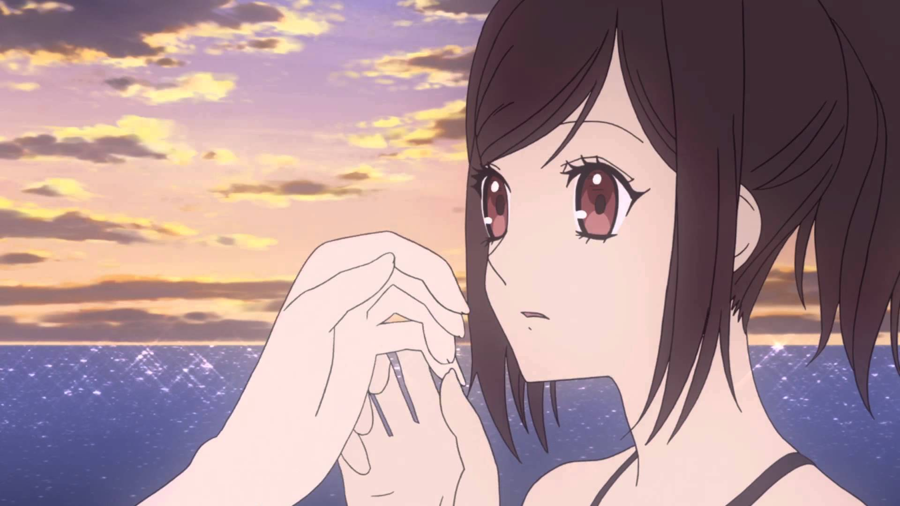

Anime Review: 'Shinsekai Yori'

In a future Japan there exists a picturesque village barred from the outside world. The rulers of this village possess psychokinetic powers called cantus. After awakening to her own powers, Watanabe Saki enters the Zenjin Academy to train alongside several of her friends. This peaceful existence soon comes to an end after a certain incident, as Saki and her friends learn about the dark and extensive history behind their society. Not everything is at seems, and humanity is hanging on but a knife’s edge.

Highlights:
A New World: The setting is unlike anything out there. Plausibility: Believable and well-thought out world and characters make for a chilling experience. Production: At its best, delivers a trifectum of sound, visuals, and writing that is mind-blowingly good. Immersion: Incredible visceral impact that makes each episode a breeze to watch.
Film Stats:
- Title: Shinsekai Yori aka From the New World
- Genre: Drama
- Production: A-1 Pictures
- Length: 25 episodes
- Release Date: 9/29/2012